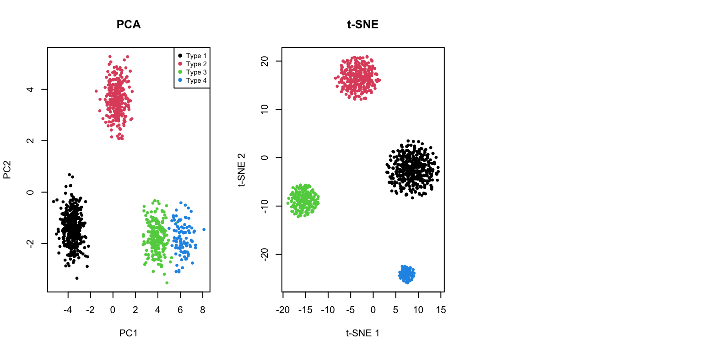

Error in `library()`:
! there is no package called 'umap'39 Non-Linear Dimensionality Reduction: t-SNE and UMAP
39.1 Beyond Linear Methods
In Chapter 38, we introduced Principal Component Analysis (PCA) as a powerful tool for dimensionality reduction. PCA works by finding linear combinations of variables that maximize variance. However, PCA has a fundamental limitation: it can only capture linear relationships.
Real biological data often contains complex, non-linear structure:
- Cell populations in single-cell RNA-seq form distinct clusters with non-linear boundaries
- Developmental trajectories follow curved paths through gene expression space
- Protein structures exhibit complex geometric relationships
When data lies on a curved manifold in high-dimensional space, linear methods like PCA may fail to reveal the true structure. This chapter introduces two powerful non-linear methods: t-SNE and UMAP.
39.2 Limitations of PCA
To see where PCA falls short, consider a simple example: data arranged in a curved pattern.
Code
# Generate data on a curved manifold (Swiss roll-like)
set.seed(42)
n <- 500
t <- runif(n, 0, 4*pi)
x <- t * cos(t)
y <- t * sin(t)
z <- runif(n, 0, 10)
color <- t # Color by position along curve
curved_data <- data.frame(x = x, y = y, z = z, t = t)
# PCA
pca_result <- prcomp(curved_data[, 1:3], scale. = TRUE)
par(mfrow = c(1, 3))
# Original 3D projection
plot(curved_data$x, curved_data$y, col = heat.colors(100)[cut(color, 100)],
pch = 19, cex = 0.5, xlab = "X", ylab = "Y",
main = "Original Data (X-Y projection)")
# PCA result
plot(pca_result$x[, 1], pca_result$x[, 2],
col = heat.colors(100)[cut(color, 100)],
pch = 19, cex = 0.5, xlab = "PC1", ylab = "PC2",
main = "PCA")
# What we want: unfolded
plot(t, z, col = heat.colors(100)[cut(color, 100)],
pch = 19, cex = 0.5, xlab = "Position along curve", ylab = "Z",
main = "Ideal: Unfolded Manifold")
PCA projects the data onto the directions of maximum variance, but it cannot “unfold” the curved structure. Points that are far apart along the manifold (different colors) may end up close together in the PCA projection.
39.3 t-SNE: t-distributed Stochastic Neighbor Embedding
t-SNE (t-distributed Stochastic Neighbor Embedding) (Maaten and Hinton 2008) is a non-linear dimensionality reduction technique designed specifically for visualization. It was introduced by van der Maaten and Hinton in 2008 and has become one of the most popular methods for visualizing high-dimensional data.
How t-SNE Works
The core idea of t-SNE is to preserve local neighborhood structure. Points that are close together in high-dimensional space should remain close together in the low-dimensional embedding.
The algorithm works in two steps:
Step 1: Define similarities in high-dimensional space
For each pair of points \(i\) and \(j\), t-SNE computes a probability \(p_{ij}\) that represents how likely point \(j\) would be picked as a neighbor of point \(i\) if neighbors were chosen in proportion to their probability density under a Gaussian centered at \(i\):
\[ p_{j|i} = \frac{\exp(-\|x_i - x_j\|^2 / 2\sigma_i^2)}{\sum_{k \neq i} \exp(-\|x_i - x_k\|^2 / 2\sigma_i^2)} \]
The variance \(\sigma_i\) is chosen so that each point has a fixed number of effective neighbors (controlled by the perplexity parameter).
Step 2: Define similarities in low-dimensional space
In the low-dimensional embedding, t-SNE uses a t-distribution (with one degree of freedom, i.e., a Cauchy distribution) to compute similarities:
\[ q_{ij} = \frac{(1 + \|y_i - y_j\|^2)^{-1}}{\sum_{k \neq l} (1 + \|y_k - y_l\|^2)^{-1}} \]
The t-distribution has heavier tails than a Gaussian, which allows dissimilar points to be placed far apart without incurring a large penalty.
Step 3: Minimize the divergence
t-SNE then minimizes the Kullback-Leibler divergence between the two distributions using gradient descent:
\[ KL(P \| Q) = \sum_{i \neq j} p_{ij} \log \frac{p_{ij}}{q_{ij}} \]
This pushes the low-dimensional embedding to match the neighborhood structure of the high-dimensional data.
The Perplexity Parameter
Perplexity is the most important parameter in t-SNE. It loosely corresponds to the number of effective nearest neighbors considered for each point. Typical values range from 5 to 50.
- Low perplexity: Focuses on very local structure; may create many small, disconnected clusters
- High perplexity: Considers more global structure; clusters may merge together
Code
# Use MNIST digits for demonstration
if (!exists("mnist")) mnist <- read_mnist()
# Sample for speed
set.seed(42)
idx <- sample(1:nrow(mnist$train$images), 2000)
x_sample <- mnist$train$images[idx, ]
labels <- mnist$train$labels[idx]
# t-SNE with different perplexities
tsne_5 <- Rtsne(x_sample, perplexity = 5, verbose = FALSE, max_iter = 500)
tsne_30 <- Rtsne(x_sample, perplexity = 30, verbose = FALSE, max_iter = 500)
tsne_100 <- Rtsne(x_sample, perplexity = 100, verbose = FALSE, max_iter = 500)
par(mfrow = c(1, 3))
plot(tsne_5$Y, col = rainbow(10)[labels + 1], pch = 19, cex = 0.5,
xlab = "t-SNE 1", ylab = "t-SNE 2", main = "Perplexity = 5")
plot(tsne_30$Y, col = rainbow(10)[labels + 1], pch = 19, cex = 0.5,
xlab = "t-SNE 1", ylab = "t-SNE 2", main = "Perplexity = 30")
plot(tsne_100$Y, col = rainbow(10)[labels + 1], pch = 19, cex = 0.5,
xlab = "t-SNE 1", ylab = "t-SNE 2", main = "Perplexity = 100")
t-SNE in R
The Rtsne package provides an efficient implementation:
Code
# Full t-SNE with good parameters
set.seed(42)
tsne_result <- Rtsne(x_sample, perplexity = 30, verbose = FALSE, max_iter = 1000)
# Plot with digit labels
df_tsne <- data.frame(
tSNE1 = tsne_result$Y[, 1],
tSNE2 = tsne_result$Y[, 2],
digit = factor(labels)
)
ggplot(df_tsne, aes(tSNE1, tSNE2, color = digit)) +
geom_point(alpha = 0.6, size = 1) +
scale_color_brewer(palette = "Spectral") +
labs(title = "t-SNE of MNIST Digits",
x = "t-SNE Dimension 1", y = "t-SNE Dimension 2") +
theme(legend.position = "right")
Important Considerations for t-SNE
t-SNE Caveats
Cluster sizes are meaningless: t-SNE does not preserve density. A large cluster in t-SNE does not mean more points.
Distances between clusters are meaningless: Only local structure is preserved. The distance between two clusters tells you nothing about their true similarity.
Results depend on random initialization: Always set a seed for reproducibility. Run multiple times to check stability.
Perplexity must be tuned: There’s no universally best value. Try multiple perplexities to understand your data.
Computationally expensive: O(n²) complexity; can be slow for large datasets. Use PCA preprocessing to speed up.
39.4 UMAP: Uniform Manifold Approximation and Projection
UMAP (Uniform Manifold Approximation and Projection) (McInnes, Healy, and Melville 2018) is a more recent algorithm that has become increasingly popular, especially in single-cell genomics. UMAP is often faster than t-SNE and may better preserve global structure.
How UMAP Works
UMAP is grounded in Riemannian geometry and algebraic topology, but the practical intuition is similar to t-SNE: preserve neighborhood relationships.
Key differences from t-SNE:
Mathematical foundation: UMAP assumes the data lies on a uniformly distributed manifold and uses concepts from topological data analysis.
Graph-based approach: UMAP constructs a weighted graph representing the high-dimensional data, then optimizes a low-dimensional graph to match it.
Different cost function: UMAP uses cross-entropy rather than KL divergence, which may help preserve more global structure.
Faster: UMAP typically runs faster than t-SNE, especially on large datasets.
Key UMAP Parameters
- n_neighbors: Similar to perplexity in t-SNE. Controls the balance between local and global structure. Typical values: 5-50.
- min_dist: Controls how tightly UMAP packs points together. Small values create tighter clusters. Typical values: 0.0-0.5.
- metric: Distance metric used. Default is Euclidean, but many options available.
UMAP in R
The umap package provides a convenient interface:
Code
# UMAP
set.seed(42)
umap_result <- umap(x_sample, n_neighbors = 15, min_dist = 0.1)Error in `umap()`:
! could not find function "umap"Code
# Plot
df_umap <- data.frame(
UMAP1 = umap_result$layout[, 1],
UMAP2 = umap_result$layout[, 2],
digit = factor(labels)
)Error:
! object 'umap_result' not foundCode
ggplot(df_umap, aes(UMAP1, UMAP2, color = digit)) +
geom_point(alpha = 0.6, size = 1) +
scale_color_brewer(palette = "Spectral") +
labs(title = "UMAP of MNIST Digits",
x = "UMAP Dimension 1", y = "UMAP Dimension 2") +
theme(legend.position = "right")Error:
! object 'df_umap' not foundEffect of UMAP Parameters
Code
# Different parameter combinations
par(mfrow = c(2, 3))
# Vary n_neighbors
for (nn in c(5, 15, 50)) {
set.seed(42)
result <- umap(x_sample, n_neighbors = nn, min_dist = 0.1)
plot(result$layout, col = rainbow(10)[labels + 1], pch = 19, cex = 0.3,
xlab = "UMAP 1", ylab = "UMAP 2",
main = paste("n_neighbors =", nn, ", min_dist = 0.1"))
}Error in `umap()`:
! could not find function "umap"Code
# Vary min_dist
for (md in c(0.0, 0.1, 0.5)) {
set.seed(42)
result <- umap(x_sample, n_neighbors = 15, min_dist = md)
plot(result$layout, col = rainbow(10)[labels + 1], pch = 19, cex = 0.3,
xlab = "UMAP 1", ylab = "UMAP 2",
main = paste("n_neighbors = 15, min_dist =", md))
}Error in `umap()`:
! could not find function "umap"39.5 Comparing PCA, t-SNE, and UMAP
Let’s directly compare these three methods on the same dataset:
Code
# PCA
pca_result <- prcomp(x_sample)
par(mfrow = c(1, 3))
# PCA
plot(pca_result$x[, 1], pca_result$x[, 2],
col = rainbow(10)[labels + 1], pch = 19, cex = 0.3,
xlab = "PC1", ylab = "PC2", main = "PCA")
legend("topright", legend = 0:9, col = rainbow(10), pch = 19, cex = 0.6, ncol = 2)
# t-SNE
plot(tsne_result$Y[, 1], tsne_result$Y[, 2],
col = rainbow(10)[labels + 1], pch = 19, cex = 0.3,
xlab = "t-SNE 1", ylab = "t-SNE 2", main = "t-SNE")
# UMAP
plot(umap_result$layout[, 1], umap_result$layout[, 2],
col = rainbow(10)[labels + 1], pch = 19, cex = 0.3,
xlab = "UMAP 1", ylab = "UMAP 2", main = "UMAP")Error:
! object 'umap_result' not found
Key Differences
| Aspect | PCA | t-SNE | UMAP |
|---|---|---|---|
| Type | Linear | Non-linear | Non-linear |
| Preserves | Global variance | Local structure | Local + some global |
| Speed | Very fast | Slow (O(n²)) | Fast |
| Reproducibility | Deterministic | Stochastic | Stochastic |
| New data | Can project | Must rerun | Can project (with care) |
| Interpretable axes | Yes (loadings) | No | No |
| Cluster distances | Meaningful | Not meaningful | Somewhat meaningful |
| Best for | Preprocessing, linear patterns | Visualization | Visualization, larger data |
When to Use Each Method
Use PCA when:
- You need interpretable dimensions (loadings)
- You want to preprocess data before other analyses
- The data structure is approximately linear
- You need to project new data points
- Speed is critical
Use t-SNE when:
- Visualization is the primary goal
- You want to explore local cluster structure
- Dataset size is moderate (< 50,000 points)
- You’ll examine multiple perplexity values
Use UMAP when:
- You have large datasets
- You want faster computation than t-SNE
- You care about preserving some global structure
- You need to embed new points (though with caveats)
39.6 Biological Applications
Single-Cell RNA-seq
One of the most common applications of t-SNE and UMAP is visualizing single-cell transcriptomic data:
Code
# Simulated single-cell-like data with distinct populations
set.seed(123)
n_cells <- 1000
n_genes <- 50
# Simulate 4 cell types
cell_types <- sample(1:4, n_cells, replace = TRUE, prob = c(0.4, 0.3, 0.2, 0.1))
# Generate expression data with cell-type-specific patterns
expression <- matrix(rnorm(n_cells * n_genes), nrow = n_cells)
for (i in 1:4) {
idx <- cell_types == i
# Add cell-type specific signal to first few genes
expression[idx, 1:10] <- expression[idx, 1:10] + i * 2
expression[idx, (i*10):(i*10+5)] <- expression[idx, (i*10):(i*10+5)] + 3
}
# Apply methods
pca_cells <- prcomp(expression, scale. = TRUE)
tsne_cells <- Rtsne(expression, perplexity = 30, verbose = FALSE)
umap_cells <- umap(expression, n_neighbors = 15)Error in `umap()`:
! could not find function "umap"Code
par(mfrow = c(1, 3))
plot(pca_cells$x[, 1:2], col = cell_types, pch = 19, cex = 0.5,
xlab = "PC1", ylab = "PC2", main = "PCA")
legend("topright", legend = paste("Type", 1:4), col = 1:4, pch = 19, cex = 0.7)
plot(tsne_cells$Y, col = cell_types, pch = 19, cex = 0.5,
xlab = "t-SNE 1", ylab = "t-SNE 2", main = "t-SNE")
plot(umap_cells$layout, col = cell_types, pch = 19, cex = 0.5,
xlab = "UMAP 1", ylab = "UMAP 2", main = "UMAP")Error:
! object 'umap_cells' not found

39.7 Practical Workflow
A typical workflow for non-linear dimensionality reduction:
- Preprocess data: Normalize, scale, and filter features
- Apply PCA first: Reduce to 50-100 dimensions to speed up t-SNE/UMAP
- Run t-SNE or UMAP: With appropriate parameters
- Explore parameters: Try multiple perplexity/n_neighbors values
- Validate: Compare with known labels or biological markers
- Iterate: Adjust preprocessing and parameters as needed
Code
# PCA preprocessing example
# First reduce to 50 PCs, then run t-SNE
pca_50 <- prcomp(x_sample)$x[, 1:50]
set.seed(42)
tsne_after_pca <- Rtsne(pca_50, perplexity = 30, verbose = FALSE,
pca = FALSE) # Already did PCA
par(mfrow = c(1, 2))
plot(tsne_result$Y, col = rainbow(10)[labels + 1], pch = 19, cex = 0.3,
xlab = "t-SNE 1", ylab = "t-SNE 2", main = "t-SNE (direct)")
plot(tsne_after_pca$Y, col = rainbow(10)[labels + 1], pch = 19, cex = 0.3,
xlab = "t-SNE 1", ylab = "t-SNE 2", main = "t-SNE (after PCA to 50D)")
Best Practices
- Always set a random seed for reproducibility
- Try multiple parameter values and compare results
- Use PCA preprocessing for large, high-dimensional datasets
- Don’t over-interpret cluster sizes or inter-cluster distances
- Run multiple times to assess stability of results
- Validate findings with independent methods or known biology
39.8 Exercises
Exercise TU.1: Comparing Methods
- Load the
tissue_gene_expressiondataset and apply PCA, t-SNE, and UMAP. Compare how well each method separates the different tissue types.
Exercise TU.2: t-SNE Perplexity
- For the t-SNE analysis, try perplexity values of 5, 15, 30, and 50. Which value produces the clearest separation of tissue types?
Exercise TU.3: UMAP Parameters
- For UMAP, experiment with
n_neighborsvalues of 5, 15, and 50, andmin_distvalues of 0.0, 0.1, and 0.5. How do these parameters affect the visualization?
Exercise TU.4: Stability Analysis
- Run t-SNE on the MNIST digit dataset multiple times with different random seeds. How stable are the cluster positions? Do the same digits always cluster together?
Exercise TU.5: Computation Time
- Time how long PCA, t-SNE, and UMAP take to run on increasing subsets of data (500, 1000, 2000, 5000 points). Plot computation time versus sample size.
Exercise TU.6: PCA Preprocessing
- Apply PCA preprocessing (reducing to 50 dimensions) before running t-SNE. Compare the results and computation time to running t-SNE directly on the full data.
39.9 Summary
- Non-linear dimensionality reduction methods can reveal structure that linear methods like PCA miss
- t-SNE is designed for visualization and excels at preserving local neighborhood structure
- The perplexity parameter controls the balance between local and global structure
- Cluster sizes and inter-cluster distances are not meaningful
- Results depend on random initialization—set a seed for reproducibility
- UMAP is a newer alternative that is often faster and may preserve more global structure
- Key parameters are n_neighbors and min_dist
- Generally faster than t-SNE, especially on large datasets
- PCA vs t-SNE vs UMAP:
- PCA: Fast, interpretable, preserves global variance, works well for linear structure
- t-SNE: Best for visualizing local cluster structure, computationally expensive
- UMAP: Good balance of speed and quality, preserves some global structure
- Best practices: Use PCA preprocessing, try multiple parameter values, validate results, don’t over-interpret
39.10 Additional Resources
- van der Maaten & Hinton (2008). Visualizing Data using t-SNE. JMLR
- McInnes et al. (2018). UMAP: Uniform Manifold Approximation and Projection. arXiv
- Kobak & Berens (2019). The art of using t-SNE for single-cell transcriptomics. Nature Communications
- James et al. (2023) - Additional perspectives on dimensionality reduction